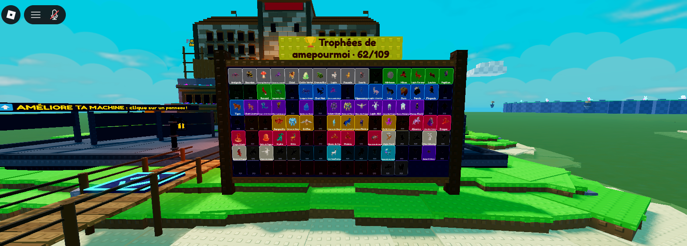
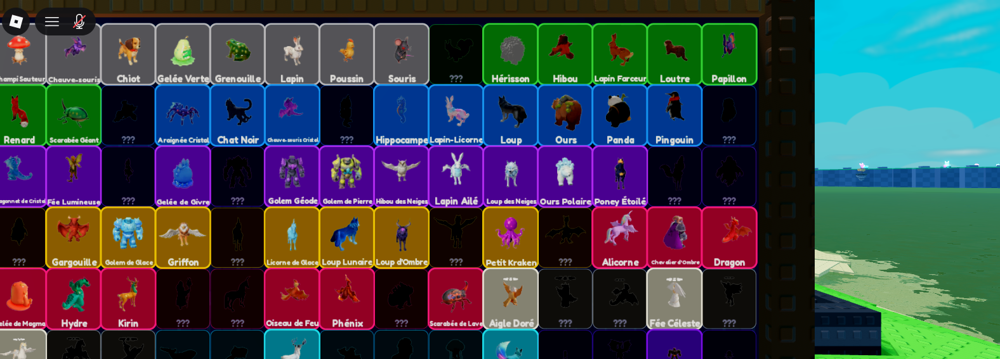

Un grand panneau en bois à l'entrée de chaque île, juste au bout du pont, tourné vers ceux qui arrivent. Il montre les 109 espèces du jeu : celles que le joueur a déjà eues en couleur avec leur nom, les autres en silhouette noire « ??? », comme dans l'Index. En haut, le nom du joueur et son score. Maquette faite dans le jeu, devant ton île (les espèces « eues » sont tirées au hasard pour l'exemple).

Vu en arrivant par le pont : on voit tout de suite la collection du propriétaire.

De près : chaque case = la vraie créature en 3D, couleur et contour de sa rareté (gris Commun → … → Secret), nom dessous.
Comment ça marcherait
Rangé par rareté : Commun en haut à gauche, puis Peu commun, Rare… jusqu'aux Boss et au Secret en bas.
Se remplit tout seul : dès qu'une nouvelle espèce naît, sa case s'allume (avec un petit éclat doré si tu es devant).
Visible par tout le monde : en passant sur l'île d'un autre joueur, on voit sa collection et son score « 62/109 ».
Titre : « 🏆 Collection de <joueur> · 62/109 » sur le fronton doré. À 109/109, le cadre devient doré.
Île libre (pas de propriétaire) : pas de panneau.
Performance : les créatures 3D ne s'affichent que quand on est près du panneau (comme dans l'Index), sinon le panneau garde juste ses couleurs.
À choisir
Place : à gauche du bout du pont (comme sur la maquette), à droite, ou des deux côtés en deux moitiés ?
Les espèces pas encore eues : silhouette noire « ??? » (comme ici) ou case vide ?
Taille : comme la maquette (≈ 30 × 15 studs) ou plus grand ?